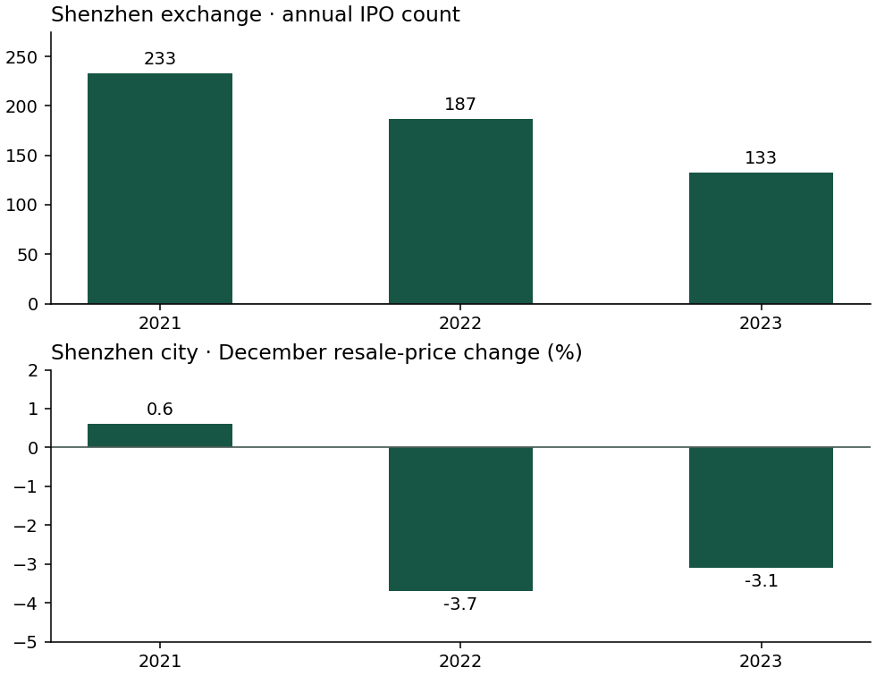

Build a comparable financial chart
Turn a statistical release and an exchange table into two reproducible exhibits.
Your task. An analyst puts “Shenzhen IPOs” and “Shenzhen house prices” on one line chart. Before you show it to a client, identify the population, unit, and observation window for each series.
Use the fixed 2021–23 CSV. The IPO count is a flow of offerings on the Shenzhen exchange over each calendar year. The housing measure is the December price index for second-hand residential buildings in Shenzhen city, relative to the previous December. An index of 96.3 means prices fell 3.7%. It gives neither the price of a flat nor the number sold.
Reproduce the exhibit
Open the CSV in a spreadsheet. Put year on the horizontal axis. Plot column B as annual IPO counts. In D2 enter =C2-100, fill down, and plot D as percentage points on a separate chart with a visible zero line. Use numeric labels such as −3.7% for the resulting change. If applying a spreadsheet percentage format, use =C2/100-1 instead. Both panels should use identical years.

Audit a misleading headline
“Shenzhen house prices recovered in 2023” confuses growth with level. The annual change improved from −3.7% to −3.1%, a 0.6 percentage-point improvement. The price level still fell. Starting from December 2021 = 100, the December 2023 level is 100 × 0.963 × 0.969 ≈ 93.31. IPO counts dropped by 54 between 2022 and 2023, about 28.9%.
Source trail. The CSV transcribes the Shenzhen row, second-hand housing table, prior-year-month column from each NBS release, and the Shenzhen exchange counts from the PwC comparison. It fixes the release vintages for classroom replication. NBS December 2021 · December 2022 · December 2023 · PwC China IPO Watch 2023, Greater China exchange comparison
What caption would you approve under the two panels?
Compare your recommendation
Exchange-wide IPO counts fell from 187 to 133 in 2023. Shenzhen city resale prices fell 3.1% year on year that December, after a 3.7% fall a year earlier. The smaller decline describes the rate of change while the price level continued to fall.